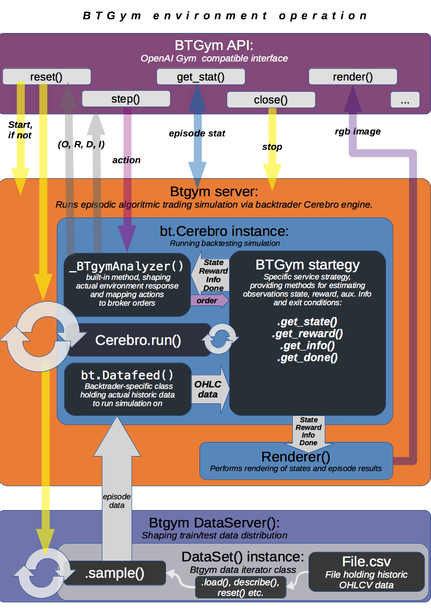

Package Description¶
Btgym is an OpenAI Gym-compatible environment for Backtrader backtesting/trading library, designed to provide gym-integrated framework for running reinforcement learning experiments in [close to] real world algorithmic trading environments.
[experimental]: Besides core environment package includes implementations of several deep RL algorithms, tuned [to attempt] to solve this particular type of tasks.
Backtrader is open-source algorithmic trading library: GitHub: http://github.com/mementum/backtrader Documentation and community: http://www.backtrader.com/
OpenAI Gym is…, well, everyone knows Gym: GitHub: http://github.com/openai/gym Documentation and community: https://gym.openai.com/
DISCLAIMER: This package is neither out-of-the-box-moneymaker, nor it provides ready-to-converge RL solutions. Rather, it is framework for setting experiments with complex, non stationary, time-series based environments. I have no idea what kind of algorithm and setup will solve it [if any]. Explore on your own!
Installation¶
It is highly recommended to run BTGym in designated virtual environment.
Clone or copy btgym repository to local disk, cd to it and run: pip install -e . to install package and all dependencies:
git clone https://github.com/Kismuz/btgym.git
cd btgym
pip install -e .
To update to latest version:
cd btgym
git pull
pip install --upgrade -e .
- Note:
BTGym requres Matplotlib version 2.0.2, downgrade your installation if you have version 2.1:
pip install matplotlib==2.0.2
Quickstart¶
Making gym environment with all parmeters set to defaults is as simple as:
from btgym import BTgymEnv
MyEnvironment = BTgymEnv(filename='../examples/data/DAT_ASCII_EURUSD_M1_2016.csv',)
Adding more controls may look like:
from btgym import BTgymEnv
from gym import spaces
MyEnvironment = BTgymEnv(filename='../examples/data/DAT_ASCII_EURUSD_M1_2016.csv',
episode_duration={'days': 2, 'hours': 23, 'minutes': 55},
drawdown_call=50,
state_shape={'raw': spaces.Box(low=0,high=1,shape=(20,4))},
port=5555,
verbose=1,
)
Same one but registering environment in Gym preferred way:
import gym
from gym import spaces
from btgym import BTgymEnv
env_params = dict(filename='../examples/data/DAT_ASCII_EURUSD_M1_2016.csv',
episode_duration={'days': 2, 'hours': 23, 'minutes': 55},
drawdown_call=50,
state_shape={'raw': spaces.Box(low=0,high=1,shape=(20,4))},
port=5555,
verbose=1,
)
gym.envs.register(id='backtrader-v5555', entry_point='btgym:BTgymEnv', kwargs=env_params,)
MyEnvironment = gym.make('backtrader-v5555')
Maximum environment flexibility is achieved by explicitly defining and passing Dataset and Cerebro instances:
from gym import spaces
import backtrader as bt
from btgym import BTgymDataset, BTgymBaseStrategy, BTgymEnv
MyCerebro = bt.Cerebro()
MyCerebro.addstrategy(BTgymStrategy,
state_shape={'raw': spaces.Box(low=0,high=1,shape=(20,4))},
skip_frame=5,
state_low=None,
state_high=None,
drawdown_call=50,
)
MyCerebro.broker.setcash(100.0)
MyCerebro.broker.setcommission(commission=0.001)
MyCerebro.addsizer(bt.sizers.SizerFix, stake=10)
MyCerebro.addanalyzer(bt.analyzers.DrawDown)
MyDataset = BTgymDataset(filename='../examples/data/DAT_ASCII_EURUSD_M1_2016.csv',
start_weekdays=[0, 1, 2, 4],
start_00=True,
episode_duration={'days': 0, 'hours': 23, 'minutes': 55},
time_gap={'hours': 5},
)
MyEnvironment = BTgymEnv(dataset=MyDataset,
engine=MyCerebro,
port=5555,
verbose=1,
)
Problem definition¶
- Discrete actions setup:
consider setup with one riskless asset acting as broker account cash and K (by default - one) risky assets. For every risky asset there exists track of historic price records referred as data-line. Apart from assets data lines there [optionally] exists number of exogenous data lines holding some information and statistics, e.g. economic indexes, encoded news, macroeconomic indicators, weather forecasts etc. which are considered relevant to decision-making. It is supposed for this setup that:
- there is no interest rates for any asset;
- broker actions are fixed-size market orders (buy, sell, close); short selling is permitted;
- transaction costs are modelled via broker commission;
4. ‘market liquidity’ and ‘capital impact’ assumptions are met; 6. time indexes match for all data lines provided;
- The problem is modelled as discrete-time finite-horizon partially observable Markov decision process for equity/currency trading:
- for every asset traded agent action space is discrete (0: `hold [do nothing], 1:buy, 2: sell, 3:close [position])`;
- environment is episodic: maximum episode duration and episode termination conditions are set;
- for every timestep of the episode agent is given environment state observation as tensor of last m time-embedded preprocessed values for every data-line included and emits actions according some stochastic policy.
- agent’s goal is to maximize expected cumulative capital by learning optimal policy;
- Continuous actions setup[BETA]:
this setup closely relates to continuous portfolio optimisation problem definition; it differs from setup above in:
- base broker actions are real numbers: a[i] in [0,1], 0<=i<=K, SUM{a[i]} = 1 for K risky assets added; each action is a market target order to adjust portfolio to get share a[i]*100% for i-th asset;
- entire single-step broker action is dictionary of form: {cash_name: a[0], asset_name_1: a[1], …, asset_name_K: a[K]};
- short selling is not permitted;
- For RL model it implies having continuous action space as K+1 dim vector.
Environment engine description¶
- BTgym uses Backtrader framework for actual environment computations, for extensive documentation see:
- https://www.backtrader.com/docu/index.html.
In short:
- User defines backtrading engine parameters by composing Backtrader.Cerebro() subclass, provides historic prices dataset as BTgymDataset() instance and passes it as arguments when making BTgym environment. See https://www.backtrader.com/docu/concepts.html for general Backtrader concepts descriptions.
- Environment starts separate server process responsible for rendering gym environment queries like env.reset() and env.step() by repeatedly sampling episodes form given dataset and running backtesting Cerebro engine on it. See OpenAI Gym documentation for details: https://gym.openai.com/docs

{kind=link}
Workflow sample:
- Define backtesting BTgymStrategy(bt.Strategy), which will control Environment inner dynamics and backtesting logic.
- For RL-specific part, any STATE, REWARD, DONE and INFO computation logic can be implemented by overriding get_state(), get_reward(), get_info(), is_done() and set_datalines() methods.
- For Broker/Trading specific part, custom order execution logic, stake sizing, analytics tracking can be implemented as for regular bt.Strategy().
- Instantiate Cerbro(), add BTgymStrategy(), backtrader Sizers, Analyzers and Observers (if needed).
- Define dataset by passing CSV datafile and parameters to BTgymDataset instance.
- BTgymDataset() is simply Backtrader.feeds class wrapper, which pipes CSV`[source]->`pandas`[for efficient sampling]->`bt.feeds routine and implements random episode data sampling.
- Initialize (or register and make()) gym environment with Cerebro() and BTgymDataset() along with other kwargs.
- Run your favorite RL algorithm:
- start episode by calling env.reset();
- advance one step of episode by calling env.step(), perform agent training or testing;
- after single episode is finished, retrieve agent performance statistic by env.get_stat().
Server operation details:
Backtrader server starts when env.reset() method is called for first time, runs as separate process, follows simple Request/Reply pattern (every request should be paired with reply message) and operates one of two modes:
Control mode: initial mode, accepts only _reset, _stop and _getstat messages. Any other message is ignored and replied with simple info messge. Shuts down upon recieving _stop via env._stop_server() method, goes to episode mode upon _reset (via env.reset()) and send last run episode statistic (if any) upon _getstat via env.get_stat().
Episode mode: runs episode according BtGymStrategy() logic. Accepts action messages, returns tuple: ([state observation], [reward], [is_done], [aux.info]). Finishes episode upon recieving action`==`_done or according to strategy termination rules, than falls back to control mode.
- Before every episode start, BTserver samples episode data and adds it to bt.Cerebro() instance
- along with specific _BTgymAnalyzer. The service of this hidden Analyzer is twofold:
- enables strategy-environment communication by calling RL-related BTgymStrategy methods:
- get_state(), get_reward(), get_info() and is_done() [see below];
- controls episode termination conditions.
- Episode runtime: after preparing environment initial state by running BTgymStrategy start(), prenext() methods, server halts and waits for incoming agent action. Upon receiving action, server performs all necessary next() computations (e.g. issues orders, computes broker values etc.), composes environment response and sends it back to agent ( via _BTgymAnalyzer). Actually, since ‘no market impact’ is assumed, all state computations are performed one step ahead:
Server loop:
pseudocode
Initialize by receiving engine [bt.Cerebro()] and dataset [BTgymDataset()]
Repeat until received message '_stop':
Wait for incoming message
If message is '_getstat':
send episode statistics
If message is '_reset':
Randomly sample episode data from BTgymDataset
Add episode data to bt.Cerebro()
Add service _BTgymAnalyzer() to bt.Cerebro()
Add DrawDown observer to bt.Cerebro(), if not already present
Prepare BTgymStrategy initial state
Set agent <action> to 'hold'
Repeat until episode termination conditions are met:
Issue and process orders according to recieved agent action
Perform all backtesting engine computations
Estimate state observation
Eestimate env. reward
Compose aux. information
Check episode termination conditions
Wait for incoming <action> message
Send (state, reward, done, info) response
Data flow structure¶

A3C framework description¶
BTGym can be thougt as two-part package: one is environment itself and the other one is collection RL algoritms tuned for solving algo-trading tasks. Below is BTgym A3C training framework operation diagram. Three advantage actor-critic style algorithms are implemented: A3C itself, it’s UNREAL extension and PPO.
Note that while base training framework is itself is somewhat stable, exact algorithms implementations and corresponding BTgym startegies, state and reward shaping methods, data providers etc. are subject to experiments and changes.

Stacked LSTM Agent
Based on NAV_A3C agent from LEARNING TO NAVIGATE IN COMPLEX ENVIRONMENTS paper by Mirowski at al.
Modifications to original paper architecture:
- splitted Policy/Value outputs: Policy is taken off first LSTM layer, Value - off the second;
- LSTM state initialisation: first RNN layer context (policy) is initialised on every episode start, while second (Value) is reset either on begining of every Trial (future work) or or every N-constant episodes, motivated by RL^2 approach by Duan et al., FAST REINFORCEMENT LEARNING VIA SLOW REINFORCEMENT LEARNING;
- inner/external observation state state split: external (market) is encoded via conolution layers and fed to first LSTM layer, inner (broker) state is fed into second LSTM layer, can optionally be encoded via separate convolution block (doesnt seem to improve much though);
- optional Value Replay losss (Unreal feature) improves sample efficiency, but is computationally more expensive;
Other details:
- All convolution and LSTM layers are layer-normalized, see Layer Normalisation paper by Jimmy Ba at al.;
- A3C option time_flat is ON by default, improves training stability, reduces computation costs, see Base_AAC class Note for details;
{kind=link}